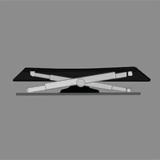

Why Go Mechanical?
Since the dawn of modern computing, a keyboard has been the main interface to both use a device and also program the device. No matter how many forms it takes, a keyboard is always present.
On the computer? ... A regular keyboard.
On the navigation devices for pilots? ... A punch style keyboard.
On your everyday smartphone? ... Hey, look! A touch-based keyboard!
But with how many changes to the standard keyboard we have seen, why does a mechanical keyboard make any difference?
Well, let's take a look into the different types of keyboards available and how a mechanical switch is different.
Switch Types
- Membrane -
 |
Dome switch keyboards are a hybrid of flat-panel membrane and mechanical keyboards. They bring two circuit board traces together under a rubber or silicone keypad using either metal "dome" switches or polyester formed domes. When these domes are deformed by pressing down on the key, a graphite coating inside the dome connect the two circuit traces to complete the connection. The domes that are typically in keyboards are the polydome variant and do not have a well defined response. This type of switch technology happens to be most commonly used in handheld controllers, mobile phones, automotive, consumer electronics and medical devices. |
- Scissor -
|  | Scissor keys are attached to the keyboard via two plastic pieces that interlock in a "scissor"-like fashion, and snap to the keyboard and the key. It still uses rubber domes, but a special plastic 'scissors' mechanism links the keycap to a plunger that depresses the rubber dome with a much shorter travel than the typical rubber dome keyboard. This type of keyswitch is often found on the built-in keyboards on laptops and keyboards marketed as 'low-profile'. These keyboards are generally quiet and the keys require little force to press. |
- Mechanical -
 |
A mechanical keyboard switch consists of a keycap, stem, and spring enclosed in a housing. When a key is pressed, the stem moves down, compressing the spring. The stem's bottoming-out triggers an electrical contact mechanism within the switch, closing a circuit and registering a keystroke. Upon release, the spring pushes the stem back up, reopening the circuit. Mechanical switches provide tactile feedback and distinct actuation points, allowing for precise typing. Different switch types offer variations in actuation force, tactile feedback, and audible click, catering to individual preferences for gaming or typing. |
Is Mechanical Really Better?
For most people, the advantage of going mechanical within their keyboard will provide provide no benefit for typing speed or accuracy. Most people are very slow at typing and only use their computer when necessary. The large percent of people that use their computer to check email, file taxes, and buy something online will have no problem using the free keyboard that came with their computer. Even the scissor type switch that is often associated with laptops and Apple products are adequate. Actually, some people might even have a higher typing speed with the low profile keyboard but at the expense of finger fatigue from bottoming out the key repeatedly.
But for the people that do use their keyboard everyday for work, a keyboard that is aestheically pleasing and enticing to use can make work or a project change from a blight to a blessing. Like many creature comforts, having a quality keyboard can bring focus to what you really want to do. Even with many parts manufactured in China, the quality of keyboard parts has risen with the standards expected of the equipment of the hobby. No longer do cheap plastic parts break off as soon as you open the box. At most, a wire might need to be checked it is straight.